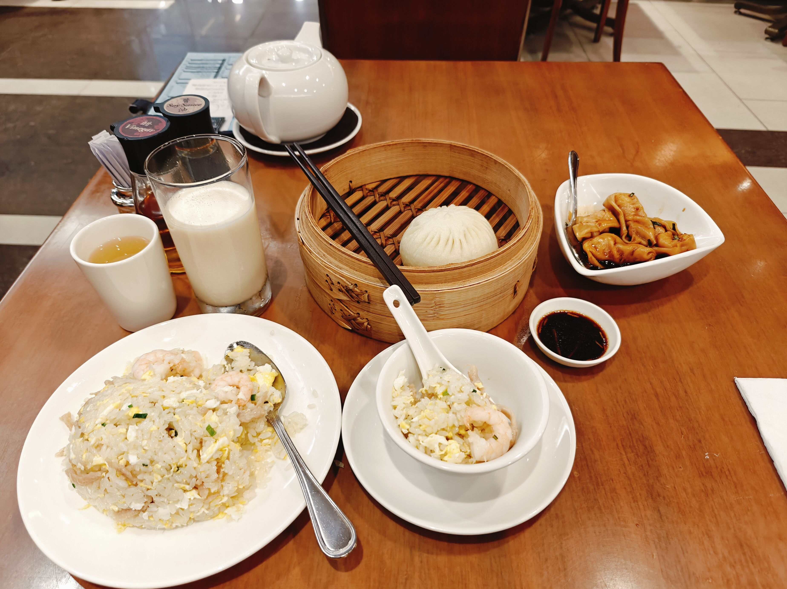
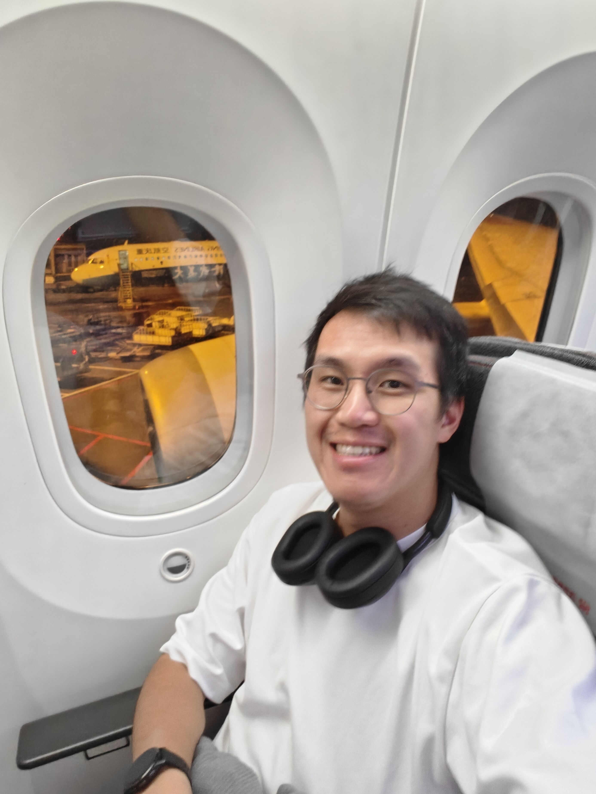
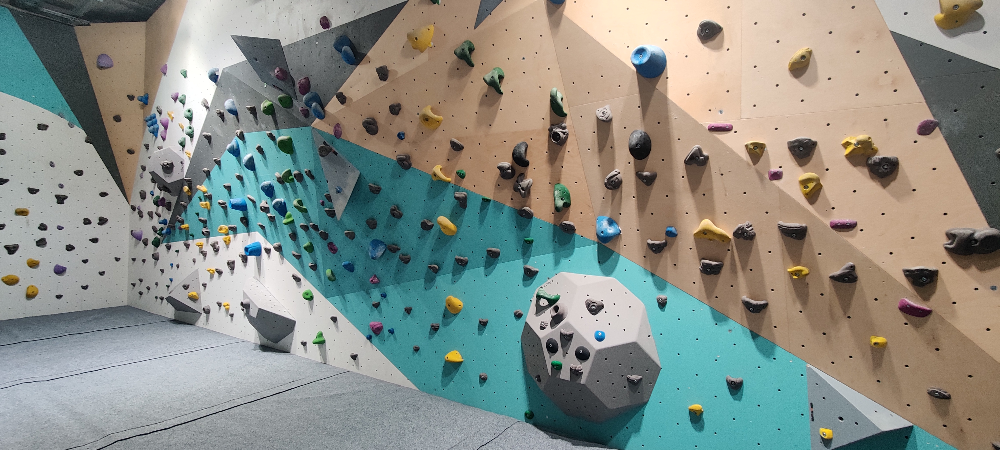
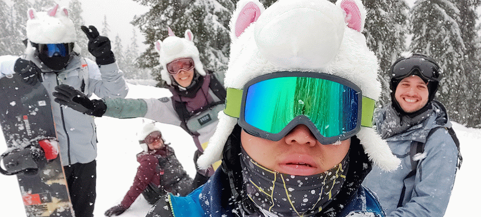
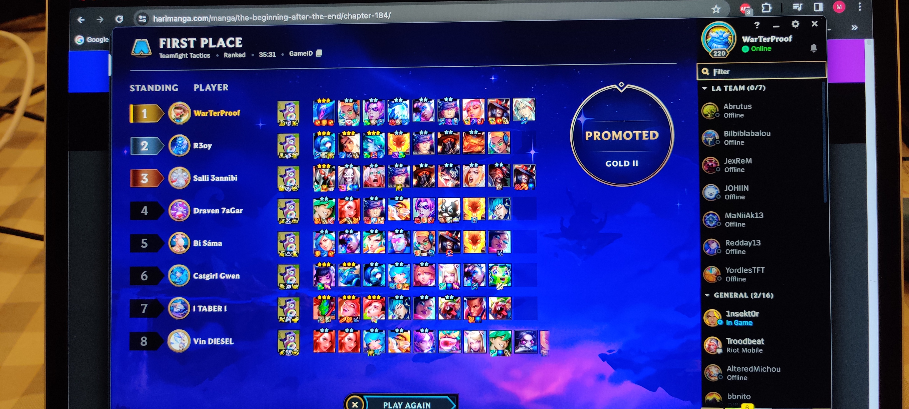
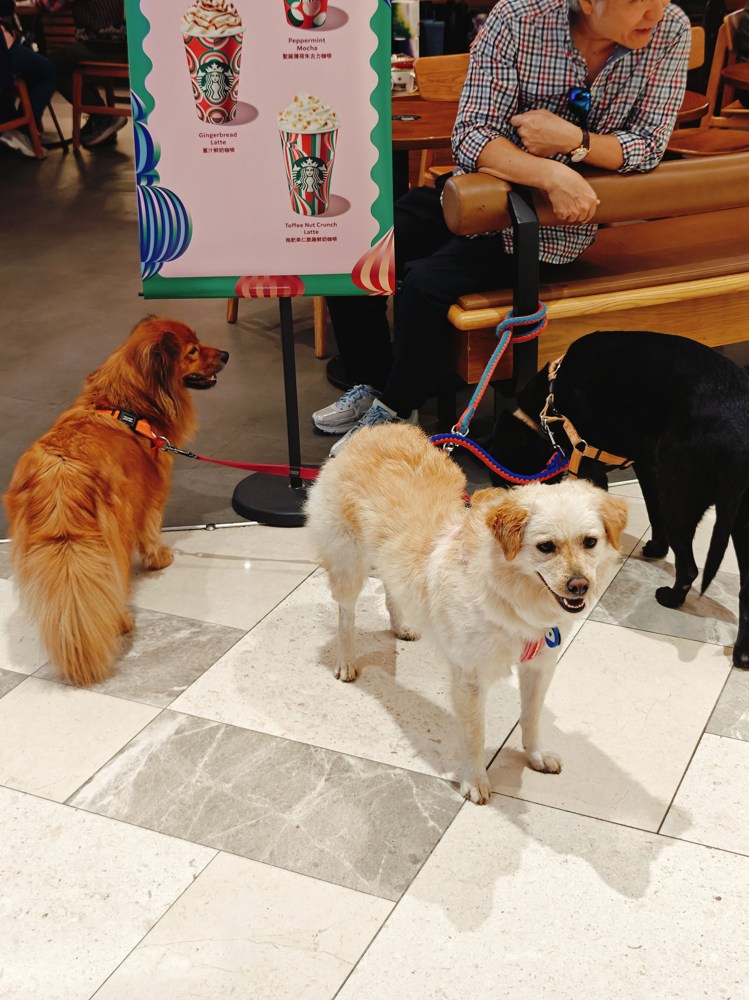

I enjoy various activities and learning new hobbies! But some things are constants in my life. While this may change very soon, here are my current key interests!
I love to both cook and eat food. If I had multiple stomachs, they'd all be as full as my solo one I currently have. Can't stop (won't stop).
This is one of my latest meals from my trip in HK @ Ding Tai Fung, amazing and fairly cheap!
Not very eco-friendly, although some interesting alternatives exist. Trying to be more concious about my footprint, but it's a very hard sacrifice that I might not make right away (forgive me).
Again, me during my return flight from Hong Kong to Paris, a very empty plane!
Got into the trend since I almost 30, quite cathartic, although I've lost the habit very recently. Gotta get back into it depsite the colder days!

Never knew midnight sports sessions could feel so good. Also, you sleep very well afterwards.
Haven't been there in a while but want to now that I have more time!
The old climbing gym I used to go to, should I pop by again?
Ski season is around the corner, already have a first trip planned, why not more!
Me and some friends at last year's ski trip.
Started in Middle School with my first MMORPG Dofus (OGs know), been a (serious) gamer since I entered Engineering school (skipping classes was the key), and it has been an integral part of my life since then (although I do play way less since I've started working).
Currently playing several games, but the new TFT season is on, so will start grinding it soon!
I love dogs. All dogs. But I especially LOVE Corgis. I have no idea why. But I love them.
Here's a big photo of some dogs I met in Hong Kong. Very chill dogs. The best dogs ever. Not Corgis, but still very cute.